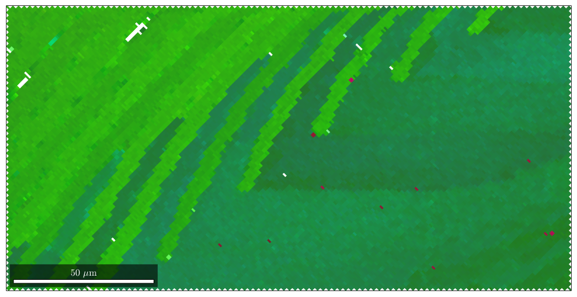
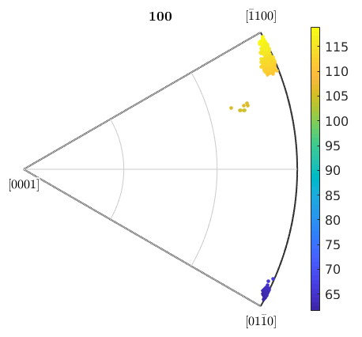
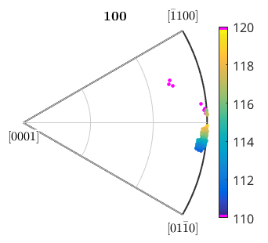
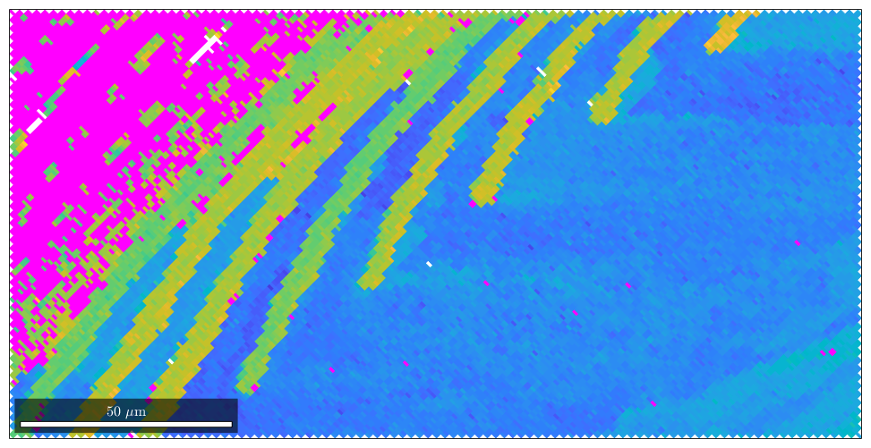
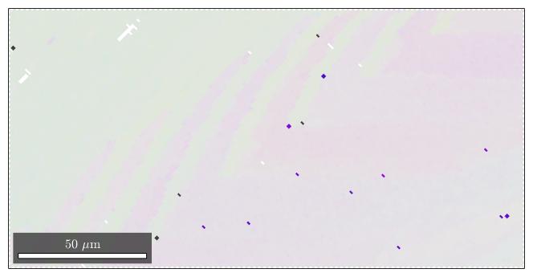
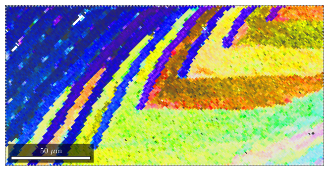
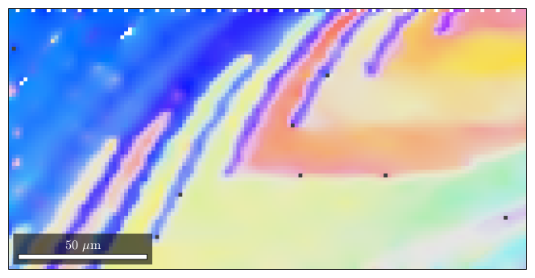
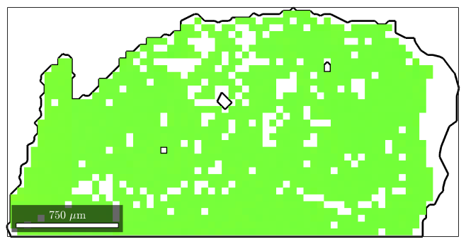
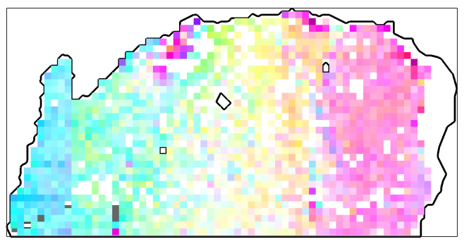

Using spezialized orientation mappings is particularly usefull when visualizing sharp data. Let us consider the following data set which restrict to the calcite phase
plotx2east mtexdata sharp ebsd = ebsd('calcite'); oM = ipdfHSVOrientationMapping(ebsd); close all; plot(ebsd,oM.orientation2color(ebsd.orientations))
Hint: You might want to use the point group "321" for colorcoding!
and have a look into the 001 inverse pole figure.
% compute the positions in the inverse pole figure h = ebsd.orientations .\ zvector; h = project2FundamentalRegion(h); % compute the azimuth angle in degree color = h.rho ./ degree; plotIPDF(ebsd.orientations,zvector,'property',color,'MarkerSize',3,'grid') colorbar
I'm plotting 8333 random orientations out of 20119 given orientations
We see that all individual orientations are clustered around azimuth angle 25 degree with some outliers at 90 and 120 degree. In order to increase the contrast for the main group we restrict the colorrange from 20 degree to 29 degree.
caxis([20 30]); % by the following lines we colorcode the outliers in purple. cmap = colormap; cmap(end,:) = [1 0 1]; % make last color purple cmap(1,:) = [1 0 1]; % make first color purple colormap(cmap)
The same colorcoding we can now apply to the EBSD map.
% plot the data with the customized color plot(ebsd,color) % set scaling of the angles to 20 - 29 degree caxis([20 30]); % colorize outliers in purple. cmap = colormap; cmap(end,:) = [1 0 1]; cmap(1,:) = [1 0 1]; colormap(cmap)
Next we want to apply the same ideas as above to the default MTEX color mapping, i.e. we want to stretch the colors such that they cover just the orientations of interest.
oM = ipdfHSVOrientationMapping(ebsd); oM.CS1 = oM.CS1.properGroup % To this end, we first compute the inverse pole figure direction such that % the mean orientation is just at the white spot of the inverse pole figure oM.inversePoleFigureDirection = mean(ebsd.orientations) * oM.whiteCenter; close all; plot(ebsd,oM.orientation2color(ebsd.orientations))
Hint: You might want to use the point group
"321" for colorcoding!
oM =
ipdfHSVOrientationMapping with properties:
inversePoleFigureDirection: [1x1 vector3d]
CS1: [6x1 crystalSymmetry]
CS2: [1x1 specimenSymmetry]
colorPostRotation: [1x1 rotation]
colorStretching: 1
whiteCenter: [1x1 vector3d]
sR: [1x1 sphericalRegion]
 We observe that the orientation map is almost completly white. Next we use the option colorStretching to increase contrast.
oM.colorStretching = 30; plot(ebsd,oM.orientation2color(ebsd.orientations))
You may play around with the option colorStretching to obtain better results. As for interpretation keep in mind that white color represents the mean orientation and the color becomes more saturated and later dark as the orientation to color diverges from the mean orientation.
Lets have a look at the corresponding color map.
plot(oM,'resolution',0.25*degree) %hold on %plotIPDF(ebsd.orientations,'points',10,'MarkerSize',1,'MarkerFaceColor','w','MarkerEdgeColor','w') %hold off
observe how in the inverse pole figure the orientations are scattered closely around the white center. Together with the fact that the transition from white to color is quite rappidly this gives a high contrast.
Another example is when analyzing the orientation distribution within grains
mtexdata forsterite ebsd = ebsd('indexed'); % segment grains [grains,ebsd.grainId] = calcGrains(ebsd) % find largest grains largeGrains = grains(grains.grainSize>800) ebsd = ebsd(largeGrains(1))
grains = grain2d
Phase Grains Mineral Symmetry Crystal reference frame Phase
1 1080 Forsterite mmm
2 515 Enstatite mmm
3 1496 Diopside 12/m1 X||a*, Y||b, Z||c
Properties: GOS, meanRotation
ebsd = EBSD
Phase Orientations Mineral Color Symmetry Crystal reference frame
1 152345 (81%) Forsterite light blue mmm
2 26058 (14%) Enstatite light green mmm
3 9064 (4.8%) Diopside light red 12/m1 X||a*, Y||b, Z||c
Properties: bands, bc, bs, error, mad, x, y, grainId
Scan unit : um
largeGrains = grain2d
Phase Grains Mineral Symmetry Crystal reference frame Phase
1 56 Forsterite mmm
2 2 Enstatite mmm
Properties: GOS, meanRotation
ebsd = EBSD
Phase Orientations Mineral Color Symmetry Crystal reference frame
1 1453 (100%) Forsterite light blue mmm
Properties: bands, bc, bs, error, mad, x, y, grainId
Scan unit : um
When plotting one specific grain with its orientations we see that they all are very similar and, hence, get the same color
% plot a grain close all plot(largeGrains(1).boundary,'linewidth',2) hold on plot(ebsd,ebsd.orientations) hold off
Hint: You might want to use the point group "222" for colorcoding! I'm going to colorize the orientation data with the standard MTEX colorkey. To view the colorkey do: oM = ipdfHSVOrientationMapping(ori_variable_name) plot(oM)
when applying the option sharp MTEX colors the mean orientation as white and scales the maximum saturation to fit the maximum misorientation angle. This way deviations of the orientation within one grain can be visualised.
% plot a grain plot(largeGrains(1).boundary,'linewidth',2) hold on oM = ipdfHSVOrientationMapping(ebsd); oM.inversePoleFigureDirection = mean(ebsd.orientations) * oM.whiteCenter; oM.colorStretching = 40; plot(ebsd,oM.orientation2color(ebsd.orientations)) hold off
Hint: You might want to use the point group "222" for colorcoding!
| DocHelp 0.1 beta |